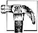

For the past few years, I've been involved with an exciting concept in low-cost housing: I prefabricate modified A-frame homes in my spare time, right in my own backyard, then transport the presawn parts to rural lots where, with help from the purchasers and their friends, I can have a new dwelling up and weathertight in only two weeks.
It all started some time ago, when my wife and I decided to move to a more rural setting. But-as is the case with a great many people-our relocation plans were stymied by the prohibitive cost of purchasing a readymade house; it seemed that the only way we'd be able to afford a country roof over our heads would be to put it there ourselves. But given the time limitations of my annual two-week vacation, building from scratch didn't seem like a viable alternative, either.
For a while, we toyed with the idea of purchasing a factory-prefabricated log cabin and erecting it ourselves-but when we looked into kit homes, we found their cost to be a bit high for our budget. However, the idea of prefabrication had taken a firm hold on my imagination, and, being an engineer by trade, I decided to try designing a structure with component parts that my wife and I could prefabricate ourselves-at home, during our evenings and weekends-then transport to a rural building site for rapid assembly.
This approach, I reasoned, would allow us to make optimum use of our spare time and, once the assembly was begun, to quickly get the structure weathertight. So I chained myself to my drawing board until I came up with a design that would meet uniform building code requirements, maximize living space, and minimize both material costs and construction complexity . . . a two-story, modified A-frame dwelling.
My calculations indicated that a 20' width would be perfect for the ground floor, while a length of 24' would provide adequate floor space for personal needs (it would have been easy to make the house longer simply by adding on additional A-frame trusses). Further, as I went about refining the overall design, I discovered that I could include two redwood-decked, cantilevered balconies without significantly increasing material costs or making construction much more difficult.
Having decided upon a definite plan of action, we shopped around until we were able to purchase a suitable country lot. Then, whenever we could steal the time-a day here and a weekend there-we put in a foundation consisting of nine pillars of doubled 16" cinder blocks, with each pillar resting atop a 2'-square concrete footing. When the foundation was finished, we left it exposed to the elements to cure while we began prefabricating our house-to-be.
The name of the game in home-prefabrication is to do as much of the sawing and nailing-together as possible before moving the parts to the building site, while simultaneously keeping the size of the preassembled components small enough to allow them to be transported with ease and safety.
Since the basic element of an A-frame-standard or modified-is the truss, and since trusses tend to be rather large when assembled, we divided each of them into four conveniently sized pieces for transporting to the site: the two sides, an upstairs floor joist, and the preassembled upper truss. Many of the other parts, however, involved nothing more complicated than cutting standard dimension lumber to length and labeling the parts for ease of assembly later on. Working in the evenings and on weekends, we were able to finish the prefabricating in just a few weeks.
With our "kit" constructed, we were ready to begin hauling the component parts to our building lot. We used a small trailer to speed the process, but a pickup truck with an elevated rack for hauling long structural members would have worked almost as well (though more trips would have been required).
Once everything was at the site, we were ready for the big push to get the shell of the house up and weathertight during my two-week vacation. Since our prefabrication work had been careful and exact, the assembly chores went smoothly. Getting the floor joists in place and decked with plywood took only a day. Assembling the modified Aframe trusses consumed another day, and erecting them a day more. So, by the end of the third day, all the trusses were up, the upstairs floor was in place, and we had the skeleton of the house completed.
We devoted the next several days to decking the roof with plywood and covering it with roofing felt and shingles, then boxing in the gable ends with studs, plywood, felt, and siding. Remarkably, the cabin was weathertight within two weeks after our arrival at the building site with our materials!
Back home in the city, we devoted several weeks' spare time to prefabricating-at an enjoyable, leisurely pace-the rest of the exterior components (trim, edging, molding, porches, etc.), which we transported to the site and appended to the structure as our schedules allowed. The total materials cost for this house-including plumbing, wiring, and interior finish-was about $12,000.
Because our first modified A-frame was so enjoyable to build and turned out so well, my wife and I decided to build another-this one to sell. When we finished that home, we put together a third, and a fourth . . . until prefabricating houses evolved into a part-time business. So far-with the help of my brother-my wife and I have built six of these low-cost structures, gradually improving the design and our prefabrication and assembly techniques along the way. However, we still rely on the same basic approach used to build the original dwelling . . . doing the prefab work at home, and assembling the parts in record-breaking time on-site.
While the aesthetics of a modified A-frame cabin seem to fit best in a rural setting, there's no reason such a home couldn't be built on a city lot, if that's your need or preference. So check out the accompanying visuals and you just might decide-as my wife and I did several years ago-that a prefabricated modified A-frame could be your low-cost, sparehours, owner-built home.
EDITOR'S NOTE: Those of you who might want detailed information concerning Mr. Wade's prefabricated A-frame-in order to build one of your own or to duplicate the Wades' home business-will be glad to know that Jack Wade has agreed to offer a step-by-step construction booklet to MOTHER's readers. Click here to order.
|
Jack and his wife built the A-frame trusses in movable sections. |
 Erecting the trusses took just two days... And the entire shell was closed in two weeks later! |
The completed home cost the Wades $12,000 to construct. |
|
|
|
|